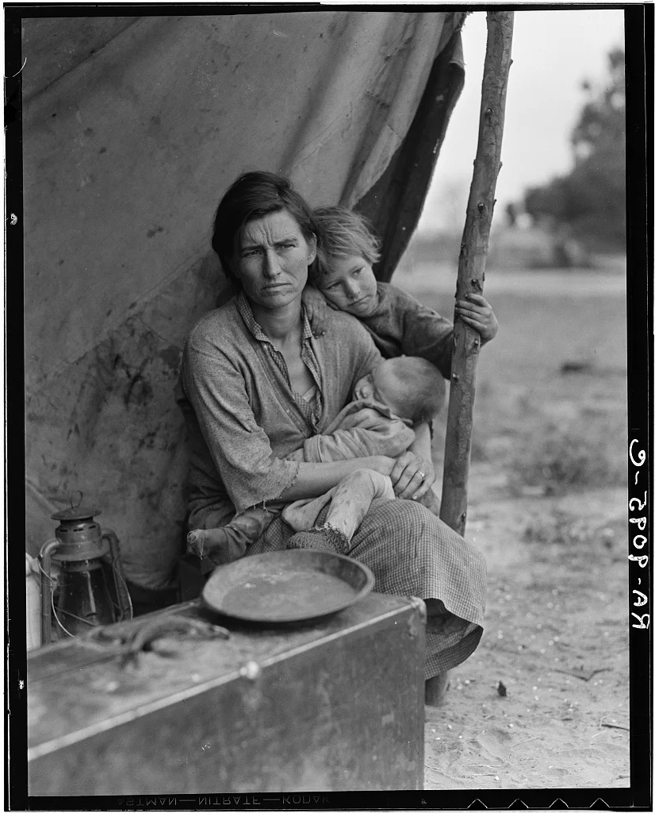
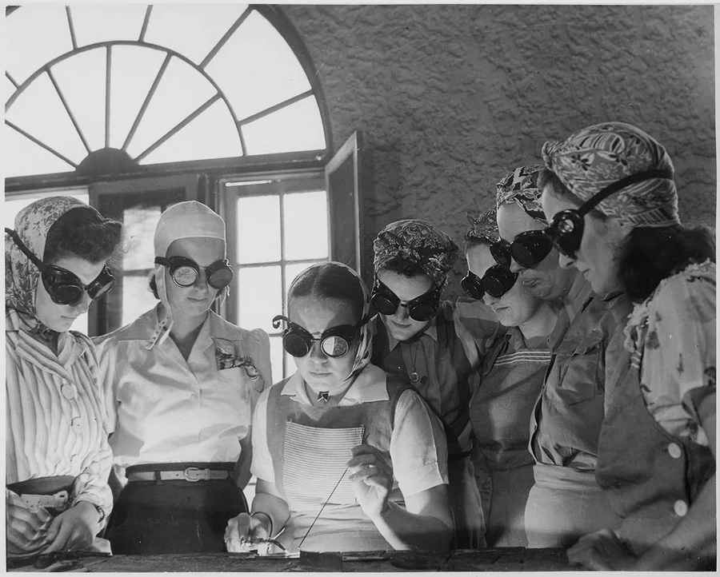

American History · Chapter lesson
World wars and the Great Depression
Read a short illustrated account, examine primary sources, and discuss the evidence.
1917–1945
World wars and the Great Depression
The United States entered World War I in 1917. The Great Depression, beginning in 1929, brought mass unemployment; New Deal programs changed the federal government’s role in economic life. After Japan attacked Pearl Harbor in 1941, the United States entered World War II and fought with the Allies against the Axis powers. Wartime service and production involved millions of people, while the forced incarceration of Japanese Americans violated civil liberties. The war ended in 1945, followed by a new international order and the Cold War.
Discuss: How can a nation defend freedom abroad while violating rights at home?
National Archives: Japanese American incarceration →
